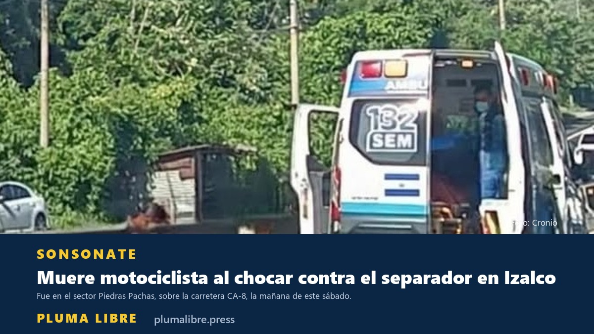

Motociclista muere al impactar contra los separadores en la carretera a Sonsonate
Ocurrió la mañana de este sábado en el sector Piedras Pachas, Izalco. La PNC resguarda la escena y la identidad de la víctima sigue sin darse a conocer.

Ocurrió la mañana de este sábado en el sector Piedras Pachas, Izalco. La PNC resguarda la escena y la identidad de la víctima sigue sin darse a conocer.

Rige dentro del estadio Ana Mercedes Campos y en las calles por donde pase el desfile cívico.


La Policía detuvo a Edwin Yovani Mejía, de 38 años, por homicidio culposo. Las víctimas, una mujer de 68 años y un hombre de 76, murieron horas después en un centro asistencial.

La PNC lo cataloga preliminarmente como un accidente. Las dos víctimas, originarias de Izalco, inhalaron el monóxido del vehículo que quedó en marcha en la cochera de la habitación.


El Sindicato de Médicos denunció que las fallas informáticas del ISSS llevan siete días. Este medio lo constató el lunes en Sonsonate: no fue posible agendar una cita.


La Dirección General de Protección Civil emitió la alerta por el déficit hídrico, los períodos secos y las altas temperaturas, y activó monitoreo y coordinación entre instituciones.

AES CLESA suspenderá el servicio de 7:00 a. m. a 5:00 p. m. este viernes 28 de agosto en decenas de comunidades.

San Francisco Gotera marcó la temperatura más alta; Güija y Nueva Concepción también superaron sus máximos de agosto.

El fuego fue alrededor de la 1:30 pm en la primera calle. No había personas; rescataron a los perros y pericos. Vecinos dicen que escucharon una explosión.


Francisco Javier García Hernández se presentó voluntariamente en una delegación, según la PNC, un día después de huir del lugar en otro vehículo. Será remitido por homicidio culposo. La versión viral le atribuía el carro al hijo del presidente de la Asamblea.

Ocurrió en el distrito de Izalco, Sonsonate Norte. Comandos de Salvamento y el Cuerpo de Bomberos recuperaron el cuerpo y entregaron la escena a las autoridades.

Le dicen que alguien entró a su cuenta y le piden el código que acaba de llegarle. Es el robo de su WhatsApp, y no es una modalidad nueva.

El memorándum 10-2026 anula las reglas sobre música, vestimenta y puntos artísticos. En Sonsonate denuncian el despido de más de 24 instructores por su orientación sexual.

Los cohetes no tomaron altura y se desviaron hacia el público, frente a la iglesia y el parque central. Entre los lesionados, un periodista de Canal 22.

La universidad tiene identificadas 17 personas fallecidas, 38 desaparecidas y 19 lesionadas en la represión de 1975. El total sigue sin establecerse.

Las fiestas se celebran del 1 al 6 de agosto y el Código de Trabajo establece asueto los días 3, 5 y 6. El país llega a estas vacaciones con 12,826 accidentes y 820 fallecidos en lo que va de 2026, y un promedio diario que subió de 57 a 63 siniestros, según ONASEVI.

La histórica empresa de buses de la ruta 205 (Sonsonate–San Salvador) cerrará operaciones y la mayoría de sus unidades pasará a la sociedad SETCS, según confirmó su propietario, Odir Cruz, a medios locales. Con ello dejarían de circular los tradicionales buses "chivo" del recorrido.

El país atraviesa su segundo evento de sequía del año. Estaciones del MARN registran cinco días consecutivos sin lluvia en el oriente, se esperan temperaturas de hasta 40 °C y el polvo sahariano limitará aún más las lluvias este fin de semana.

El Tribunal Primero de Sentencia de Sonsonate declaró culpable a Jenderson Rodrigo Ramírez García de violación en menor e incapaz en modalidad continuada. Según la Fiscalía, contactó a la víctima a través de redes sociales.

Cinco presuntos integrantes de la estructura fueron capturados en 13 allanamientos simultáneos la madrugada del jueves. Según la Fiscalía, compraban droga en San Salvador y la distribuían en San Antonio del Monte, Sonzacate e Izalco.

El movimiento se registró a las 8:48 a.m. y se percibió en varios departamentos del país; sin víctimas, daños ni amenaza de tsunami, según las autoridades.

El veterano fotoperiodista viroleño, uno de los últimos de la vieja guardia y amigo del fundador de este medio, Rolando Ramírez, falleció este 14 de julio.

El accidente ocurrió la tarde del viernes en el kilómetro 38½, en San Luis Talpa. Una rastra perdió el control e impactó a seis personas que se encontraban sobre la vía; una resultó herida.

San Salvador lidera con 89 casos, seguido de Sonsonate (32) y La Libertad (28), según el boletín epidemiológico del Ministerio de Salud. El 84% corresponde a hombres.

El departamento es el quinto con más siniestros viales del país. A nivel nacional se contabilizan 11,905 accidentes y 752 personas fallecidas entre enero y el 7 de julio, según el Observatorio Nacional de Seguridad Vial.

El pronóstico indica lluvias con actividad eléctrica y ráfagas de viento de 40 km/h o más para la tarde y noche, con énfasis en las zonas central y paracentral.

El presidente Nayib Bukele anunció el relevo de parte del contingente humanitario desplegado tras los terremotos del 24 de junio; el país mantiene 300 especialistas permanentes en la zona afectada.

El corte programado será el martes 7 de julio, de 8:00 a.m. a 4:00 p.m., y afectará cantones, caseríos y colonias de los tres distritos del departamento.

El alcalde Roberto Aquino presentó el proyecto a los vecinos; las obras inician esta semana y se harán por administración.

La circular del MINED ordena medidas de bioseguridad en centros educativos públicos y privados.

Familias piden intervención por el estado del centro escolar.

El religioso enfrentaba un proceso canónico al momento de su muerte.